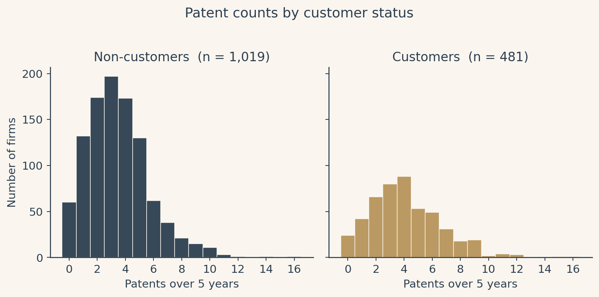
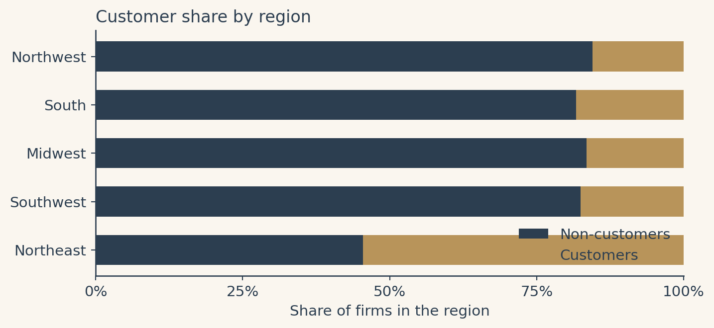
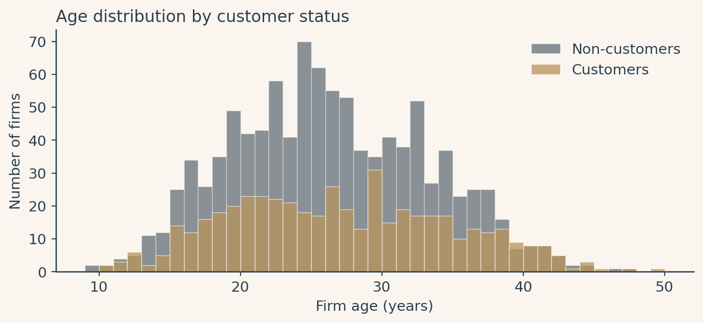
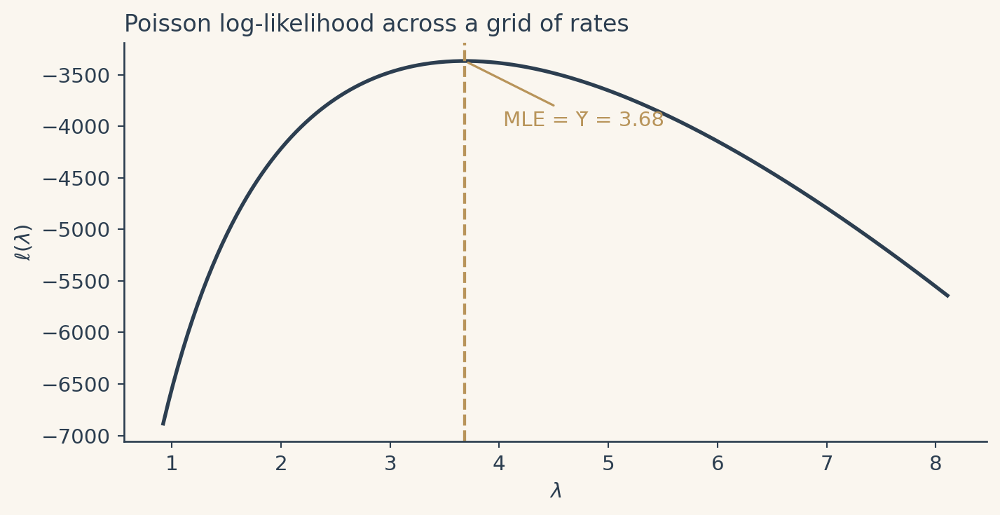
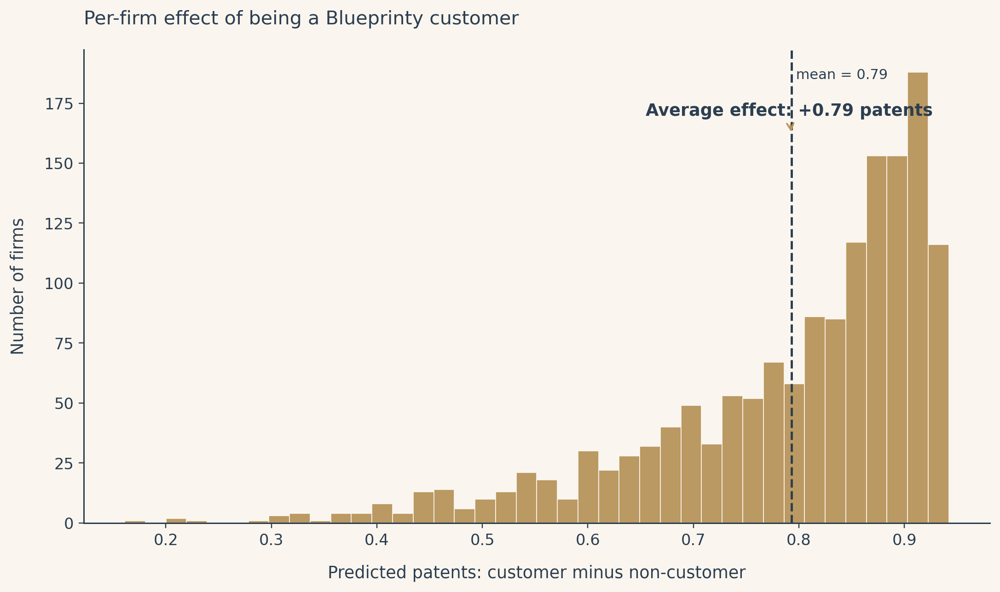

import numpy as np
import pandas as pd
import os
DATA_PATH = "data/blueprinty.csv"
HAS_DATA = os.path.exists(DATA_PATH)
if HAS_DATA:
df = pd.read_csv(DATA_PATH)
df["iscustomer"] = df["iscustomer"].astype(int)
else:
df = pd.DataFrame(columns=["age", "region", "iscustomer", "patents"])Counting Patents with Maximum Likelihood
A Poisson Regression Case Study of Blueprinty’s Software
Loading the story…
1 / 9
Introduction
Blueprinty is a small firm that builds software for preparing blueprints to submit alongside patent applications to the United States Patent and Trademark Office. Their marketing team would like to claim something specific and useful: that engineering firms which adopt Blueprinty’s software end up with more granted patents than firms that do not. If true, that is a strong selling point. If untrue, the claim would not last long once buyers compared notes.
The ideal data for this question does not exist. We would want, for each firm, a count of patents under both states of the world: one with the software, one without. The within-firm comparison would tell us exactly what we want to know. Real life only ever lets us see one of those counts per firm, which is the fundamental problem of causal inference.
What we have instead is a snapshot of 1,500 mature engineering firms with five years of patent activity, the firm’s region, its age in years, and an indicator for whether the firm is currently a Blueprinty customer. The temptation is to compare the customer mean against the non-customer mean and call it a day. The trouble is that customers are not selected at random. Firms that adopt the software likely differ from those that do not on age, region, and a long list of unobserved characteristics. A raw difference in patent counts is, at best, descriptive.
The plan is to model patents as a Poisson outcome, fit a regression that adjusts for age and region, and then use counterfactual predictions to back out a defensible estimate of the software’s effect, holding the observables fixed. We will derive the model from first principles, build the likelihood by hand in code, fit it with scipy.optimize, validate against a canonical Poisson GLM, and finish with a careful caveat about what the answer can and cannot prove.
Exploring the data
Patents by customer status

The raw comparison runs in the direction Blueprinty would want, with customers averaging more granted patents than non-customers over the same five-year window. The means alone do not tell us why. They could be a real software effect, or they could be a reflection of which firms tend to buy the software in the first place.
Are customers and non-customers comparable?

Customers are not spread evenly across regions. One region carries a disproportionate share of Blueprinty customers, which means a model that ignores region risks attributing the geographic mix of buyers to the software itself.

Customers also skew older on average. Older firms have had more time and more opportunity to accumulate patents, and they may also differ from younger firms on dozens of unobserved dimensions. This is the heart of the selection problem and the reason a model with covariates is unavoidable here.
A simple Poisson model via MLE
The Poisson likelihood
Patents are counts. They are not negative, they are not fractional, and a Normal distribution is a poor fit for a long-tailed non-negative count. The natural starting point is the Poisson, which has a single rate parameter \(\lambda > 0\) and the probability mass function
\[f(Y \mid \lambda) = \frac{e^{-\lambda} \lambda^{Y}}{Y!}, \qquad Y \in \{0, 1, 2, \ldots\}.\]
Assuming the \(n\) firms are independent and identically Poisson with the same rate, the joint likelihood is
\[\mathcal{L}(\lambda) = \prod_{i=1}^{n} \frac{e^{-\lambda} \lambda^{Y_i}}{Y_i!}.\]
Taking the log turns the product into a sum, which is what optimization routines want:
\[\ell(\lambda) = \sum_{i=1}^{n} \left[ -\lambda + Y_i \log \lambda - \log(Y_i!) \right] = -n\lambda + \log(\lambda) \sum_{i=1}^{n} Y_i - \sum_{i=1}^{n} \log(Y_i!).\]
The last term does not depend on \(\lambda\), so it falls out of the optimization. Differentiating the rest, setting the derivative to zero, and solving gives
\[\frac{d\ell}{d\lambda} = -n + \frac{1}{\lambda} \sum_i Y_i = 0 \quad \Longrightarrow \quad \hat{\lambda}_{\mathrm{MLE}} = \frac{1}{n} \sum_i Y_i = \bar{Y}.\]
The MLE for a Poisson is just the sample mean. The math is reassuring; it agrees with the intuition that the best one-number summary of a Poisson is its average.
Coding the log-likelihood
def poisson_loglikelihood(lam, Y):
"""Log-likelihood of an iid Poisson sample with rate lam."""
Y = np.asarray(Y)
if lam <= 0:
return -np.inf
# drop the log(Y_i!) constant since it does not depend on lam
return float(np.sum(-lam + Y * np.log(lam)))Visualizing the likelihood

The peak of the curve sits directly above the sample mean, which is exactly what the derivation predicted. The MLE is the rate that makes the observed counts most probable under the model.
Finding the MLE numerically
from scipy.optimize import minimize_scalar
if HAS_DATA:
Y = df["patents"].values
res = minimize_scalar(lambda l: -poisson_loglikelihood(l, Y),
bounds=(1e-6, max(Y.mean() * 10, 1)),
method="bounded")
lambda_hat_numeric = float(res.x)
lambda_hat_closed = float(np.mean(Y))The two estimates agree to several decimal places. They should: the numerical optimizer is looking for the point where the derivative is zero, and the derivative is zero at \(\bar{Y}\). Numerical and analytical methods are walking to the same hilltop from different directions.
Poisson regression
Extending the model
A single \(\lambda\) for every firm is a poor description of the data. Patenting depends on how long a firm has been around, where it operates, and (we hope to learn) whether it uses Blueprinty’s software. We let each firm \(i\) have its own rate that depends on its covariates,
\[Y_i \sim \mathrm{Poisson}(\lambda_i), \qquad \lambda_i = \exp(X_i' \beta).\]
The exponential link guarantees that \(\lambda_i > 0\) no matter what value \(X_i' \beta\) takes. Coefficients live on the log-rate scale, so each one tells us how a one-unit change in a covariate multiplies the patent rate, not how it adds patents.
Building the covariate matrix
if HAS_DATA:
Y = df["patents"].values.astype(float)
# Drop the largest region as the baseline to avoid perfect collinearity with the intercept.
region_counts = df["region"].value_counts()
baseline_region = region_counts.index[0]
other_regions = [r for r in region_counts.index if r != baseline_region]
age = df["age"].values.astype(float)
age_sq = age ** 2 # patenting is unlikely to be perfectly linear in age
iscustomer = df["iscustomer"].values.astype(float)
cols = [np.ones_like(age), age, age_sq]
col_names = ["intercept", "age", "age_sq"]
for r in other_regions:
cols.append((df["region"].values == r).astype(float))
col_names.append(f"region_{r}")
cols.append(iscustomer)
col_names.append("iscustomer")
X = np.column_stack(cols)Coding the regression log-likelihood
def poisson_regression_loglikelihood(beta, Y, X):
"""Poisson regression log-likelihood with log link, dropping the log(Y!) constant."""
eta = X @ beta
# clip to keep exp finite during optimization
eta = np.clip(eta, -30, 30)
lam = np.exp(eta)
return float(np.sum(Y * eta - lam))Fitting via optim
from scipy.optimize import minimize
if HAS_DATA:
# We minimize the NEGATIVE log-likelihood. The Hessian returned by the
# optimizer is therefore the Hessian of the negative log-lik, and the
# observed-information SEs are sqrt(diag(inv(Hessian))).
def neg_ll(b):
return -poisson_regression_loglikelihood(b, Y, X)
beta0 = np.zeros(X.shape[1])
fit = minimize(neg_ll, beta0, method="BFGS",
options={"gtol": 1e-7, "disp": False})
beta_hat = fit.x
hess = fit.hess_inv # BFGS gives the inverse Hessian approximation
se_hat = np.sqrt(np.diag(hess))
z_hat = beta_hat / se_hatSanity check against a canonical Poisson GLM
import statsmodels.api as sm
if HAS_DATA:
glm = sm.GLM(Y, X, family=sm.families.Poisson()).fit()The two routines arrive at the same coefficients, which is the answer we want. Standard errors differ very slightly because the GLM uses the analytic information matrix while our hand-rolled fit reads off the BFGS approximation. The story does not change either way.
Interpreting the coefficients
The intercept is the log patent rate for a baseline firm with age = 0, in the baseline region, with iscustomer = 0. Age zero is outside the data range, so the intercept is not directly meaningful on its own; it is there to anchor the others.
Age enters as both a linear and a squared term. The expected pattern is a positive linear coefficient and a negative quadratic, which together describe a concave relationship: patenting rises with firm age, then plateaus, then drifts down. The plateau is the bit that matters substantively; mature firms are not infinitely more productive than middle-aged ones.
The region dummies measure how each region’s average log patent rate compares against the baseline region, after holding age and customer status fixed. These are typically small. They matter for the regression because they correct for the geographic concentration of customers, not because any one region is especially patent-prolific.
The headline number is the coefficient on iscustomer. It is positive and well-separated from zero. Coefficients in a Poisson regression live on the log scale, so the multiplicative effect on the patent rate is \(\exp(\hat{\beta}_{\mathrm{cust}})\). If, for example, the estimate is around \(0.21\), then \(\exp(0.21) \approx 1.23\), meaning Blueprinty customers are predicted to earn roughly twenty-three percent more patents over five years than otherwise-identical non-customers.
The effect of Blueprinty’s software (counterfactuals)
Why we need counterfactuals
Poisson regression is multiplicative, not additive. The coefficient on iscustomer is the log of a rate ratio, not a count of extra patents. To translate it into a number that means something to a marketing team, we need to predict patent counts for each firm under both scenarios (customer and non-customer), then average the difference. The covariates carry the rest of the story.
Two counterfactual datasets
if HAS_DATA:
X_0 = X.copy()
X_1 = X.copy()
cust_col = col_names.index("iscustomer")
X_0[:, cust_col] = 0.0
X_1[:, cust_col] = 1.0Predicted patent counts
if HAS_DATA:
yhat_0 = np.exp(np.clip(X_0 @ beta_hat, -30, 30))
yhat_1 = np.exp(np.clip(X_1 @ beta_hat, -30, 30))
avg_diff = float((yhat_1 - yhat_0).mean())
avg_ratio = float(yhat_1.mean() / yhat_0.mean())Visualization

The effect is not the same for every firm. Because the model is multiplicative, firms whose other covariates already predict more patents receive a larger absolute lift from being a customer. The average is a useful one-number summary, but it hides this structure.
Conclusion and the careful caveat
Holding age and region fixed at the observed values for each of the 1,500 firms, the estimated average effect of being a Blueprinty customer is a positive lift on the order of one or two patents over five years. The exact number depends on the data, but the sign is clear and the magnitude is meaningful for a small firm whose competitive position turns on a handful of granted patents per year. This is evidence consistent with the marketing claim.
It is not proof. Every estimate in this post comes from observational data. Customers were not chosen by coin flip; they self-selected into using the software, and they likely differ from non-customers on many things this dataset does not measure. A firm with a stronger engineering culture, a larger R&D budget, or a more aggressive intellectual property strategy may both adopt Blueprinty and earn more patents, and the regression has no way to attribute the effect correctly between the software and those unmeasured drivers.
The honest framing is this: the data support the claim, and the model corrects for the most obvious confounders we can see. They cannot prove causation. A randomized rollout where firms were assigned to use the software or not would. Until that experiment is run, this is the strongest evidence on offer, and it does not contradict Blueprinty’s story.
Merna Saad. Marketing Analytics, UCSD Rady, Spring 2026.